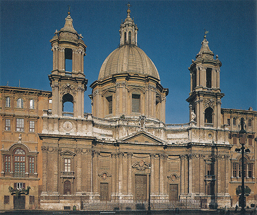
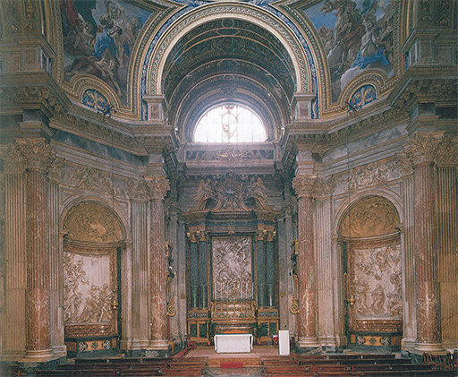
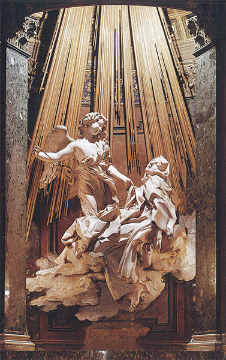
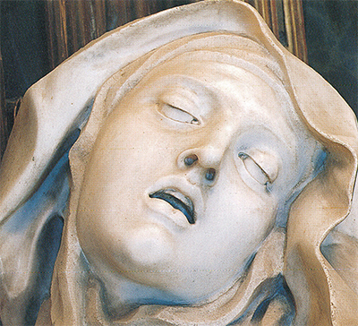
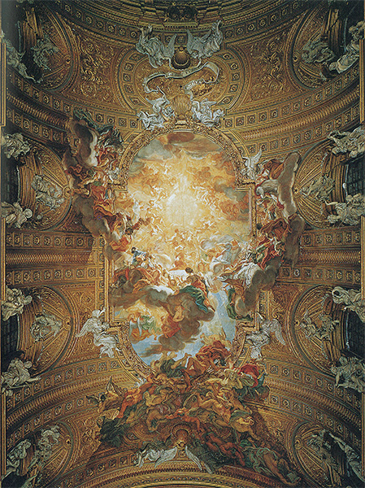
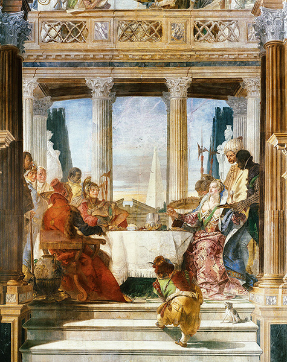
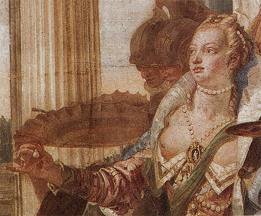
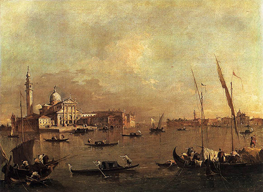

21
EL PODER Y LA GLORIA, I
Italia, segunda mitad del siglo XVII y siglo XVIII
Recordemos los principios del estilo barroco en obras de arte de finales del siglo XVI como la iglesia de los jesuitas de Della Porta (ilustración 250). Della Porta desdeñó las llamadas reglas de la arquitectura clásica para conseguir mayor variedad y más importantes efectos. Está en la naturaleza de las cosas que cuando el arte ha emprendido este camino deba proseguir por él. Si la variedad y los efectos llamativos son considerados importantes, cada artista que venga después tendrá que producir decoraciones más complicadas y concebir ideas más asombrosas para seguir causando gran impresión. Durante la primera mitad del siglo XVII, este proceso de ir acumulando más deslumbrantes y nuevas ideas a cada paso para los edificios y su ornamentación siguió avanzando en Italia, y hacia la mitad del siglo XVII el estilo que denominamos barroco adquirió su total desenvolvimiento.
La ilustración 282 muestra una típica iglesia barroca construida por el famoso arquitecto Francesco Borromini (1599-1667) y sus colaboradores. Es fácil de observar que incluso las formas adoptadas por Borromini son realmente renacentistas. Al igual que Della Porta, empleó la forma del frontis de un templo para enmarcar la puerta central, y, como él, repitió las pilastras a cada lado para conseguir un efecto de mayor riqueza. Pero en comparación con la fachada de Borromini, la de Della Porta casi parece contenida y severa. Borromini ya no se contentó con decorar una pared valiéndose de los órdenes tomados de la arquitectura clásica, sino que compuso su iglesia agrupando formas diferentes: la gran cúpula, las torres de los lados y la fachada. Y esta fachada está curvada como si se hubiera modelado en yeso. Contemplándola en detalle aún hallamos efectos más sorprendentes: el primer piso de las torres es cuadrado, pero el segundo circular, y la relación entre uno y otro se ha llevado a cabo mediante un extraño cornisamento, que horrorizaría a cualquier ortodoxo maestro de arquitectura, pero que cumple a la perfección el papel que le ha sido asignado. Los marcos de las puertas que flanquean la entrada principal son aún más sorprendentes. El modo en que el tímpano, encima de la puerta, está realizado para enmarcar una ventana oval, no tiene paralelo alguno en ningún edificio anterior. Las espirales y volutas del estilo barroco han llegado a dominar tanto en la estructura general como en los detalles decorativos. De edificios barrocos como éste de Borromini se ha dicho que son superabundantes en su ornamentación y teatrales. Ni el propio Borromini hubiera podido comprender que se le hiciera un cargo semejante; él se propuso construir una iglesia que pareciese fastuosa y que fuera un edificio lleno de esplendor y movimiento. Si la finalidad del teatro es deleitarnos con la visión de un mundo maravilloso de luz y fastuosidad, ¿por qué un artista que proyectara una iglesia no tendría perfecto derecho a ofrecernos una idea de pompa y magnificencia aún mayores para hacernos pensar en las de la mansión celeste?

282 Francesco Borromini y Carlo Rainaldi, Iglesia de Santa Agnese, Piazza Navona, Roma, 1653. Iglesia del alto barroco romano.
Cuando ingresamos en estas iglesias comprendemos mejor cómo fueron empleadas en ellas deliberadamente la pompa y la ostentación de las piedras preciosas, el oro y el estuco para evocar una visión de la gloria celestial mucho más concreta que en las catedrales medievales. La ilustración 283 muestra el interior de la iglesia de Borromini. Para los que están acostumbrados a los interiores de las iglesias de los países nórdicos, esta fastuosidad deslumbradora puede parecer, dados nuestros gustos, demasiado mundana. Pero la Iglesia católica pensaba en aquella época de distinta manera; cuanto más predicaban los protestantes contra el aspecto externo de las iglesias, más afanosa se volvía la Iglesia romana en poner a su servicio las facultades de los artistas. Así, la Reforma y la exclusión de las imágenes y del culto a éstas, que influyeron con tanta frecuencia en el pasado sobre el desarrollo del arte, ejercieron también sus efectos indirectamente sobre el desarrollo del barroco. El orbe católico descubrió que el arte podía servir a la religión de un modo que iba más allá de la sencilla tarea que le había sido asignada al principio del medievo: la tarea de enseñar la doctrina a la gente que no sabía leer. También podía ayudar a persuadir y a convertir a aquellos que, acaso, habían leído demasiado. Arquitectos, pintores y escultores eran llamados para que transformaran las iglesias en grandes representaciones cuyo esplendor y aspecto casi obligaban a tomar una determinación. No son tanto los detalles lo que en esos interiores importa como el efecto general del conjunto. No podemos esperar comprenderlos, o juzgarlos correctamente, si no contemplándolos como marco para el ritual espléndido de la Iglesia romana, tal como lo hemos visto durante la misa mayor, cuando las velas se hallan encendidas en el altar, el aroma del incienso invade las naves y los acordes del órgano y del coro nos transportan a un mundo distinto.

283 Francesco Borromini y Carlo Rainaldi, Interior de la iglesia de Santa Agnese, Piazza Navona, Roma, h. 1653.
284 Gian Lorenzo Bernini, Costanza Buonarelli, h. 1635. Mármol, 72 cm de altura; Museo Nacional del Bargello, Florencia.
Este arte supremo de la decoración teatral fue principalmente desarrollado por un artista, Gian Lorenzo Bernini (1598-1680), perteneciente a la misma generación de Borromini, un año mayor que Van Dyck y Velázquez y ocho que Rembrandt. Tal como estos maestros, fue un consumado retratista. La ilustración 284 muestra su retrato de una joven, el cual posee toda la lozanía e independencia de las mejores obras de Bernini. Cuando la vi en el museo de Florencia, un rayo de sol caía sobre el busto y toda la figura parecía respirar y cobrar vida. Bernini captó una expresión momentánea que estamos seguros debió ser muy característica del modelo. En reproducir una expresión del rostro tal vez nadie haya superado a Bernini, quien hizo uso de esta facultad suya, como Rembrandt de su profundo conocimiento de la conducta humana, para conferir una forma visible a la experiencia religiosa.
La ilustración 285 muestra un altar, obra también de Bernini, en una de las capillas laterales de una pequeña iglesia romana. Está dedicado a la española santa Teresa, una monja del siglo XVI que relató en un libro famoso sus místicas visiones; en él habla de un momento de éxtasis celestial en el cual un ángel le traspasó el corazón con una dorada flecha encendida produciéndole gran dolor y, a la par, un infinito deleite. Esta visión es la que Bernini se aventuró a representar. Aparece la santa conducida hacia el cielo sobre una nube, con raudales de luz que manan desde arriba en forma de rayos dorados. Vemos al ángel acercándose suavemente a ella, y a la santa desfallecida en éxtasis. El grupo está colocado de tal modo que parece flotar sin punto de apoyo en el espléndido marco que le proporciona el altar, recibiendo la luz de una ventana invisible que hay en la parte superior. El visitante nórdico tal vez se incline a encontrar en la disposición del conjunto, a primera vista, demasiadas reminiscencias de efectos teatrales, y, en el grupo, un exceso de emotividad. Naturalmente, esto es cuestión de gustos, acerca de la formación de los cuales es inútil discutir; pero si comprendemos que una obra de arte religioso, como el altar de Bernini, puede legítimamente emplearse para provocar sentimientos de fervorosa exaltación y de transportes místicos, debemos admitir que Bernini logró este propósito de forma magistral. Dejó a un lado, deliberadamente, cualquier limitación para conducirnos a una cima de emotividad a la que nunca habían llegado los artistas. Si comparamos el rostro de su desfallecida santa con cualquier obra realizada en los siglos anteriores, encontraremos que ha logrado una intensidad en su expresión que nunca se había conseguido en el arte hasta entonces. Pasando de la ilustración 286 a la cabeza de Laocoonte (ilustración 69) o a la de El esclavo moribundo, de Miguel Ángel (ilustración 201), advertiremos la diferencia. Incluso la manera de proceder de Bernini en los ropajes fue en su época algo completamente nuevo; en lugar de dejarlos caer en grandes pliegues, a la tradicional manera clásica, los retorció y desmenuzó para incrementar el efecto de movimiento y agitación. En todos estos recursos fue prontamente imitado por toda Europa.

285 Gian Lorenzo Bernini, El éxtasis de santa Teresa, 1645-1652. Mármol, 350 cm de altura; capilla Cornaro, iglesia de Santa Maria della Vittoria, Roma.

286 Detalle de la ilustración 285.
Si es cierto que esculturas como El éxtasis de Santa Teresa, de Bernini, sólo pueden ser juzgadas en el lugar para el que se realizaron, lo mismo sucede, y aun en mayor medida, con las decoraciones de las iglesias barrocas. La ilustración 287 muestra la decoración de un techo de la iglesia de los jesuitas en Roma pintada por un discípulo de Bernini, Giovanni Battista Gaulli (1639-1709). El artista quiso hacernos caer en la ilusión de que la bóveda de la iglesia se ha abierto y que estamos ingresando con la mirada en la gloria celestial. Esta idea ya la había tenido anteriormente Correggio (ilustración 217), pero los efectos conseguidos por Gaulli son muchísimo más teatrales. El tema es la adoración del nombre del Cristo como Jesús, que se halla inscrito con letras radiantes en el centro de su iglesia, estando rodeado por infinitas multitudes de querubines, ángeles y santos que contemplan la luz con arrobamiento mientras legiones de demonios o ángeles caídos son expulsadas de la mansión celeste con ademanes de desesperación. La atestada escena parece romper el marco del techo, que se desborda con nubes llenas de santos y de pecadores cayendo hacia el interior de la iglesia. Al dejar que la pintura rompa así el marco, el artista deseaba confundirnos y abrumarnos, de modo que no sepamos ya qué es lo real y qué lo ilusorio. Una pintura como ésta carece de sentido fuera del lugar para el que fue realizada; quizá no sea por ello una coincidencia que, tras el completo desarrollo del estilo barroco, en el que todos los artistas colaboraron obteniendo algún efecto determinado, la pintura y la escultura, como artes independientes, decayeran en Italia y en toda la Europa católica.

287 Giovanni Battista Gaulli, La adoración del santo nombre de Jesús, 1670-1683. Fresco; artesonado de la iglesia de los jesuitas Il Gesù, Roma.
En el siglo XVIII, los artistas italianos fueron principalmente soberbios decoradores de interiores, famosos en toda Europa por su habilidad en los estucos y en sus grandes frescos, que podían transformar cualquier salón de un castillo o de un monasterio en el escenario propicio para un fastuoso espectáculo. Uno de los más famosos de estos maestros fue el veneciano Giovanni Battista Tiepolo (1696-1770), quien no solamente trabajó en Italia sino también en Alemania y España. La ilustración 288 muestra una parte de su decoración en un palacio de Venecia, realizada hacia 1750. Representa un tema que dio a Tiepolo todas las oportunidades de desplegar alegres colores y vestidos suntuosos: el banquete de Cleopatra. El asunto trata del festín que dio Marco Antonio en honor de la reina de Egipto, el cual tenía que ser el nec plus ultra de la fastuosidad; los platos más famosos se sucedieron uno tras otro en serie interminable; pero a la reina no le causaron impresión alguna, por lo que desafió a su orgulloso huésped diciéndole que ella lograría un plato mucho más costoso que cualquiera de los que él le había ofrecido: tomó una célebre perla de sus pendientes, la disolvió en vinagre y bebió el brebaje a continuación. En el fresco de Tiepolo vemos a Cleopatra mostrando la perla a Marco Antonio, mientras un sirviente negro le presenta una copa de cristal.

288 Giovanni Battista Tiepolo, El banquete de Cleopatra, h. 1750. Fresco; Palacio Labia, Venecia.

289 Detalle de la ilustración 288.
Frescos como éste debieron ser muy entretenidos de pintar y, al contemplarlos, resultan agradables de ver. Sin embargo, ante estos fuegos artificiales advertimos que poseen valores menos permanentes que las creaciones más sobrias de épocas anteriores. La gran edad del arte italiano estaba tocando a su fin.
Sólo en una rama de especialización el arte italiano creó nuevas concepciones a inicios del siglo XVIII. Ésta, muy característica, fue la pintura y grabado de panoramas. Los viajeros que desde toda Europa iban a Italia a admirar las glorias de sus pasadas grandezas, deseaban a menudo llevarse consigo algunos recuerdos. En Venecia, particularmente, cuyas perspectivas son tan fascinantes para el artista, se desarrolló una escuela de pintores que atendieron a tales demandas. La ilustración 290 muestra una vista de Venecia de uno de esos pintores, Francesco Guardi (1712-1793). Al igual que el fresco de Tiepolo, nos revela este cuadro que el arte veneciano no había perdido su sentido de la suntuosidad, de la luz y el color. Resulta interesante comparar las vistas del lago veneciano realizadas por Guardi con las sobrias y fidedignas marinas de Simon de Vlieger (ilustración 271) pintadas un siglo antes. Advertimos que el espíritu del barroco, la afición al movimiento y a los efectos atrevidos, puede manifestarse incluso en una simple perspectiva de una ciudad. Guardi dominó por entero los efectos que habían sido estudiados por los pintores del siglo XVII; él supo que una vez que hemos conseguido la impresión general de un panorama, nos resulta sumamente fácil completarla y enriquecerla con pormenores que nosotros mismos le añadamos. Si observamos atentamente sus gondoleros, descubriremos con sorpresa que están hechos con unos cuantos toques de color hábilmente dispuestos; y sin embargo, si los miramos desde lejos, la ilusión de realidad es perfecta. La tradición de los descubrimientos barrocos, que vivió en estos últimos frutos del arte italiano, adquiriría nueva importancia en épocas subsiguientes.

290 Francesco Guardi, Vista de San Giorgio Maggiore, Venecia, h. 1775-1780. Óleo sobre lienzo, 70,5 x 93,5 cm; colección Wallace, Londres.

P. L. Ghezzi, Expertos y anticuarios reunidos en Roma, 1725. Dibujo; plumilla y tinta negra sobre papel, 27 x 39,5 cm; Galería Albertina, Viena.